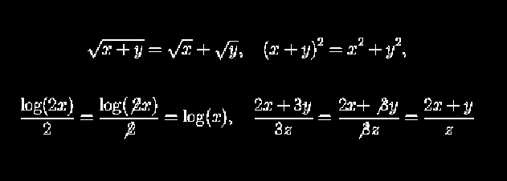

Office Hours: Tuesdays and Thursdays
2:00-3:15 p.m. and
by appointment.
Prerequisites:
Qualification through placement, or a grade of C or better in
math 111 or 115.
Text:
Applied Calculus by Hughes-Hallet, Gleason, Lock, Flath,
et.al.
Calculators:
A calculator such as the TI-83 (preferred) or TI-82. There are
several types of calculators that will do all that is required for the
class and you are welcome to use them. However the class
demonstrations with be with the TI-83 and for other types of
calculators I may have trouble helping with the programming (but I
will try to help).
Remark:
The homework, quizes, workseheets, tests, and syllabus
are in pdf format and can
be read with Adobe's Acrobat Reader which can down loaded here.
Tests:
There will be three midterms and a final. The midterms count for
100 points each and the final is 150 points. The dates of the tests
are
Homework will count for 100 points. Part of the homework grade
will be in class quizzes. . Generally the quizzes will be announced
on the previous class. Note that the homework counts as much as a
test, so it is important that you do it.
Grading:
The there is a total of 550 points possible for the term broken
down as follows:
Three midterms @ 100 points each
300 points
Total for homework and quizzes
100 points
Final
150 points
Total
550 points
Your grade will be based on the total out of 550. The last day to
drop without a grade of WF is September 30 and you should have a good
idea of where you stand by then.
There will be not make up exams or quizzes:
If you miss
a test, then your score on that exam is 75% of the average of
your other test scores including the final. If a second exam is
messed the score on it is zero. Exams will be taken in class on
the days listed above. So don't ask to take an exam early or late
because you have to be ``out of town'' or some other reason. Late
homework will not be accepted. Likewise there will be not make up
quizzes. If you miss a quiz then you lose the points. As a
reward to anyone who turns on all the homework and takes all the
quizzes will get 10 extra points. Missing only one homework or
quiz is worth 5 extra points. On the other hand if someone leave
class early without permission then I reserve the right to give
them a zero on the homework for the day.
Sharing calculators on quizzes and
tests is not allowed:
You should bring your calculator to every class meeting and
especially to tests. If you do not bring it them you will not be
allowed to share a calculator with someone else from the class on
quizzes or tests and will thus lose the points on those questions
that need a calculator.
Getting Help:
Besides my office hours you can get help in the
Math Lab.
This is a free tutoring service supplied by the mathematics
department. There are three locations
LeConte 101, Towers' Conference Center, and Bates Area. The hours
that the math lab is open can be found
here.
About partial credit and bad algebra:
Some arithmetic errors do not bother me much. If your
get in a hurry and get 7x8=48 it is not going to cost you
much, provided you are doing every thing else correctly.
However, there are certain mistakes (all involving misuse of high
school in such a way that always gives the wrong answer), that will
not be tolerated. If you make these
mistakes I will mark the entire problem wrong. Here are some
examples of zero point errors:

This is not meant to scare you, but just to let you know where things
stand.